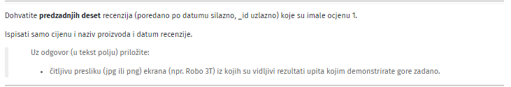

Kako za ovaj zadatak  napraviti upit ?
sa ovim upitom : db.reviews.find({score:“1.0”},{price:1,title:1,time:1}).sort({$natural:-1}).limit(10)
dobivam zadnjih 10 no ne kuzim kako da ih jos poredam po _id i po time jer kad probam to dodati u sort dobijem error da se nemože sa $natural dodati još _id i time